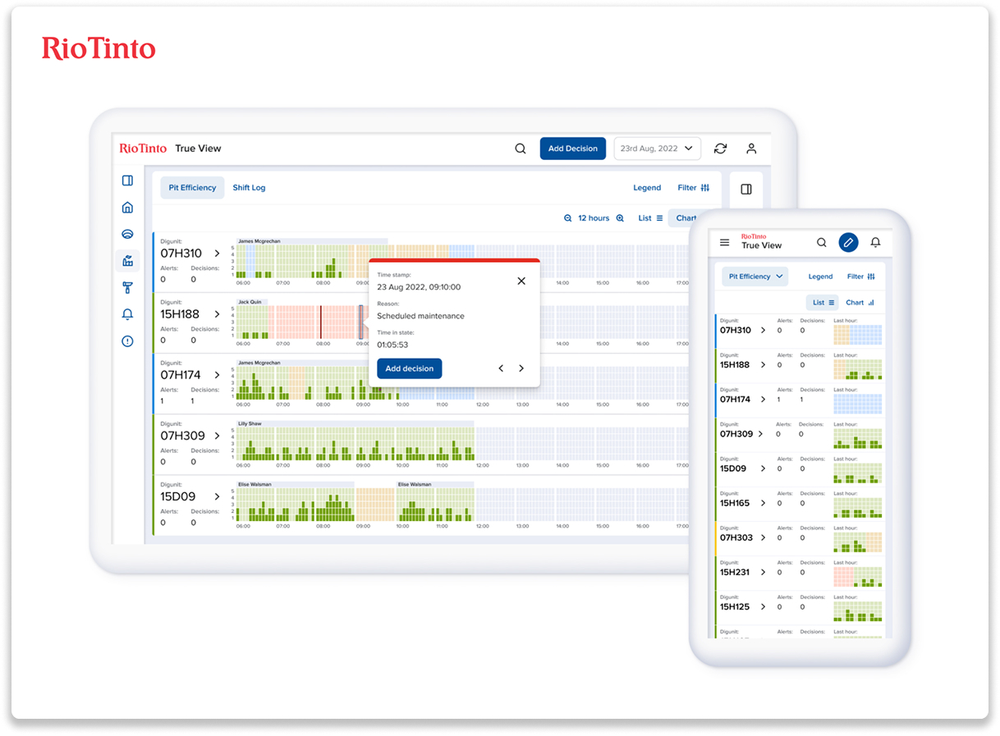
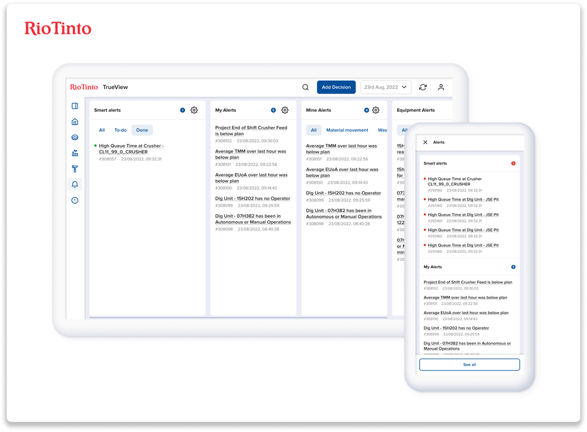
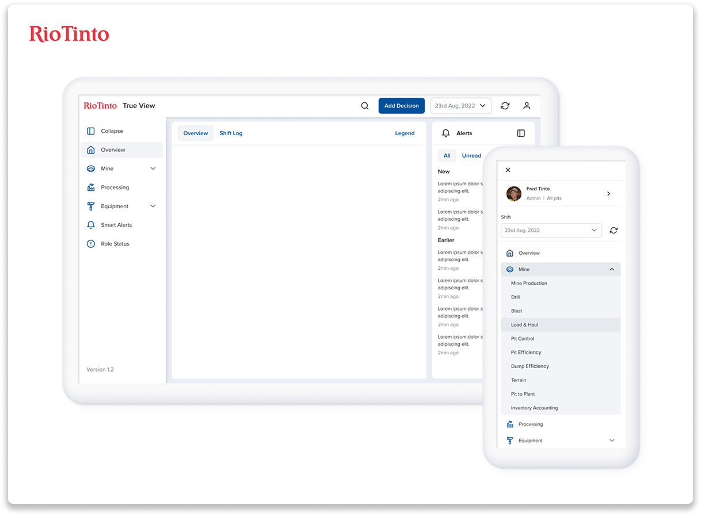
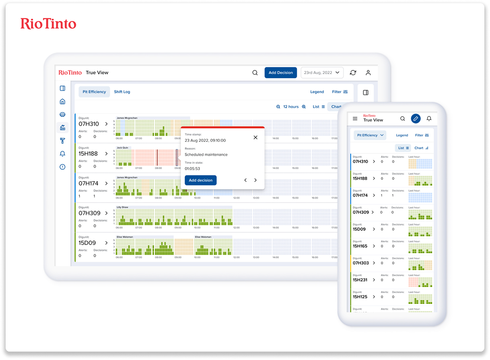
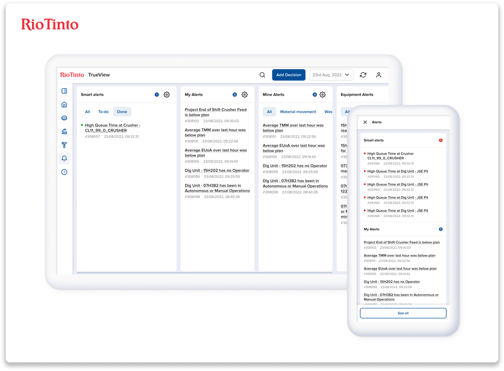
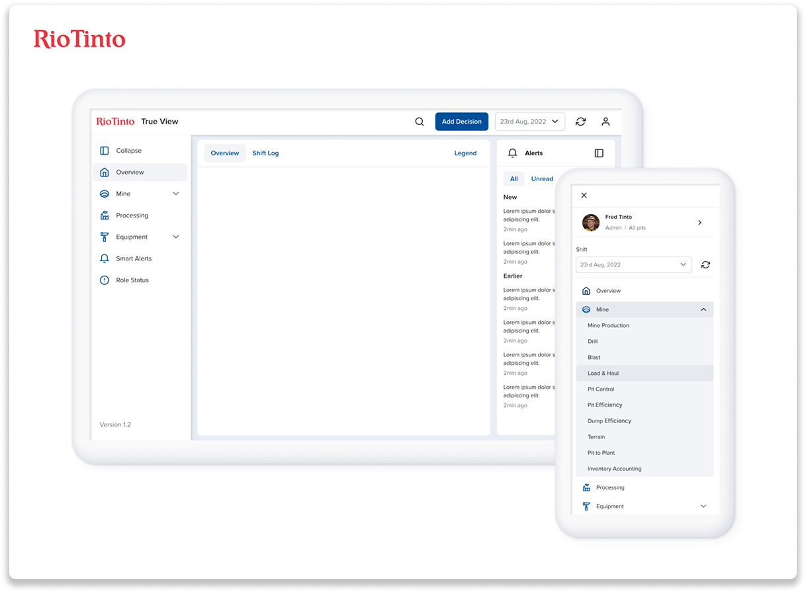

Rio Tinto
TrueView is a platform used by pit patrollers working on the ground every day. Rio Tinto was concerned that the platform they were building wasn't ensuring the best productivity or the best safety for employees in the field. I focused on simplifying access to decision-making data and creating dashboards that help workers consume, understand, and act—faster and more safely.
The Challenge
Field teams didn't have fast access to the decision-making data they needed, and the platform risked overwhelming people with alert noise and configuration complexity. We had to make critical workflows usable in the real world—not in perfect office conditions—while improving both productivity and safety.
The Concept
Together with Rio Tinto we ran a series of workshops to define the main pain points, prioritise them, and identify the use cases we would focus on throughout the project. We also defined the design principles that our design system and product designs would support.
The Solution
The solution focused on two things: first, creating an easy and functional login and registration flow. Second, defining dashboard concepts that present data so users can consume it, understand it, and work with it—making daily jobs faster and safer.
 





Impact
TrueView helped field teams access decision-making data faster, reduced friction in critical flows, and made the platform safer to use under real-world conditions. The dashboard concept and system patterns improved clarity without overwhelming users.